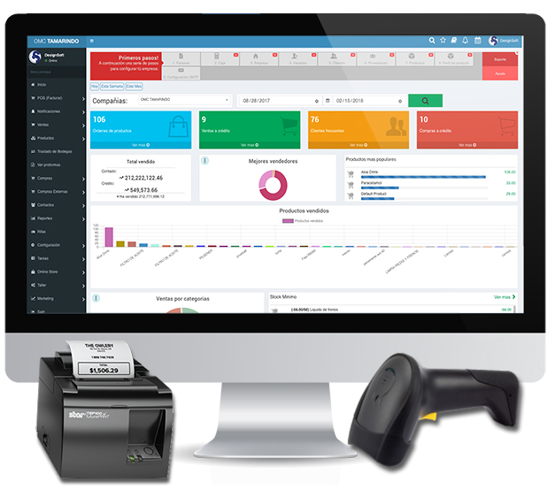

Proyecto de Ingeniería de Software 2020

El proyecto consistió en generar una aplicación web capáz de administrar las maquinas de dulces para una empresa.
Este proyecto a nivel personal es uno de los más dificiles en los que he trabajado ya se implementaron diferentes herramientas como: Angular, .Net Core, Jasper Reports.
El proyecto debía generar autenticación por medio de JWT (Java Web Token), tambien debía manejar desde la orden de fabricación de las máquinas hasta la visita del administrador de máquina para recoger el dinero o reportar algún desperfecto en la misma.
También debía incluir reportería de la cantidad de venta generada por estas máquinas hacia los socios comerciales de la empresa.
Y por último hay que mencionar que este proyecto fue desarrollado aplicando la metodología SCRUM y utilizando Azure DevOps para
toda la documentación.
Fecha de Finalización: Julio del 2020.
Proyecto de Integración SAP /PI
El proyecto consistió en integrar el módulo de SAP PI con el sistema SAP ECC.
El módulo de SAP PI (SAP Process Integration) por sus siglas en inglés es un módulo de SAP encargado de manejar todas las conexiones de sistemas externos con el sistema SAP ECC, por medio de una forma nativa, mucho más facil de manejar y con un mejor control del flujo de datos.
Dentro del proyecto se me fue encargado generar distintos servicios SOAP desde el sistema SAP ECC para poder tener acceso desde el sistema PI, exportando datos como materiales, clientes, precios, etc.
Durante el proyecto pude aprender muchos aspectos respecto al manejo de servicios rest, ya que todas las conexiones fueron generadas de esta forma
Este sistema en la fecha que se implemento fue el primero a nivel Centro América agregando así un alto grado de dificultad.
Fecha de Finalización: Noviembre del 2018.
Proyecto de Integración Factura Electrónica
El proyecto consistió en integrar sistema de firma electrónica para Costa Rica y Colombia.
En ambos países el funcionamiento de las firmas electrónicas son muy parecidas ya que consiste en que al momento de realizar una factura esta viaje al sistema certificador firme el documento y luego regrese al sistema SAP para registrar la firma otorgada por el ente certificador.
Como recurso ABAP se me encargo la tarea de gestionar las conexiones con el sistema certificador y lograr que la conexión fuera lo más rápida posible ya que al momento de facturar el cliente no podía esperar mucho tiempo por una factura, en el módulo SAP ha sido uno de los proyectos más complicados y de mayor duración en los que he trabajado.
Durante el proyecto pude aprender muchos aspectos del módulo de facturación y ventas de SAP, al punto de obtener un certificado de Funcional SD Junior.
Fecha de Finalización: Octubre del 2019.
Proyecto de Facturación

El proyecto consistió en generar un sistema de facturación y control de ordenes de mantenimiento de un taller mecánico.
Es el primer proyecto que trabaje de forma independiente, aplicando todos los conocimientos aprendidos, como metodologás de desarrollo y levantamiento de software, al ser un proyecto realizado de forma independiente tuve que realizar varias reuniones con el cliente para definir el alcance que debería tener.
El proyecto fue realizado en el lenguaje de programación JAVA y utilizando una base de datos MySQL, la aplicación se definió para que se ejecutará en modo cliente servidor, ya que en el taller solo se cuenta con una computadora.
Durante el proyecto pude aprender muchos aspectos de project manager ya que tuve que gestionar varias reuniones con el cliente para lograr satisfacer las necesidades con el software.
Fecha de Finalización: Agosto del 2020.